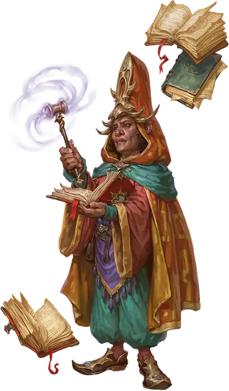

Блюститель закона Братства порядка
Fraternity of Order Law Bender
Маленький или Средний Гуманоид

Класс Доспеха 12 (15 с доспехом мага)
Хиты 137 (25к8 + 25)
Скорость 30 футов
| мод | спас | ||
|---|---|---|---|
| СИЛ | 8 | −1 | −1 |
| ЛОВ | 15 | +2 | +2 |
| ТЕЛ | 12 | +1 | +5 |
| мод | спас | ||
|---|---|---|---|
| ИНТ | 19 | +4 | +4 |
| МДР | 16 | +3 | +7 |
| ХАР | 14 | +2 | +2 |
Навыки Восприятие +7, Проницательность +7
Чувства пассивное Восприятие 17
Языки Общий плюс три языка
Опасность 9 (5000 опыта)
Бонус мастерства +4
Действия
Мультиатака. Блюститель закона совершает три атаки Магической вспышкой и использует Силу авторитета или Использование заклинаний.
Магическая вспышка. . Рукопашная или Дальнобойная атака заклинанием: +8 к попаданию, досягаемость 5 футов или дистанция 90 футов, одна цель. Попадание: 17 (2к12 + 4) урона силовым полем.
Сила авторитета. Блюститель закона нацеливается на существо, которое он может видеть в пределах 60 футов. Цель должна преуспеть в спасброске Интеллекта Сл 16, иначе получит 10 (3к6) урона психической энергией и станет недееспособной на 1 минуту. В конце каждого своего хода цель может повторять спасбросок, оканчивая на себе действие эффекта случае успеха. Цель, преуспевшая в спасброске, становится невосприимчивой к Силе авторитета этого блюстителя закона на 24 часа.
Использование заклинаний. Блюститель закона накладывает одно из следующих заклинаний, не нуждаясь в материальных компонентах, используя Интеллект в качестве базовой характеристики:
• Неограниченно: рассеивание магии [dispel magic], полёт [fly], доспехи мага [mage armor], волшебная рука [mage hand], фокусы [prestidigitation]
Бонусные действия
Пространственная лазейка. Блюститель закона телепортируется вместе с любым снаряжением, которое он несёт или носит, на расстояние до 30 футов в незанятое пространство, которое он может видеть.
Реакции
Вероятностная лазейка (3/день). Когда блюститель закона или существо, которое он может видеть, совершает бросок атаки, спасбросок или проверку характеристик, блюститель закона может дать этому броску преимущество или помеху.
Описание
“Я упоминал фракции, которые избегают разговоров и просто дубасят вас? Вы должны считаться с их эффективностью”.
– Морте
Члены Братства Порядка находят и используют лазейки в законах мультивселенной. Блюстители закона - это магистраты, обходящие правила вероятности и пространства, свободно перемещаясь и манипулируя результатами действий вокруг них.